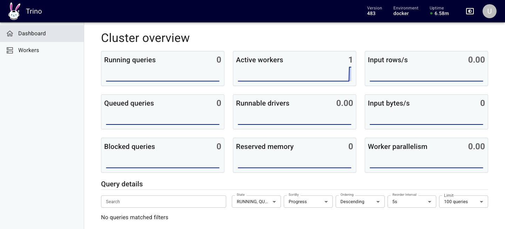
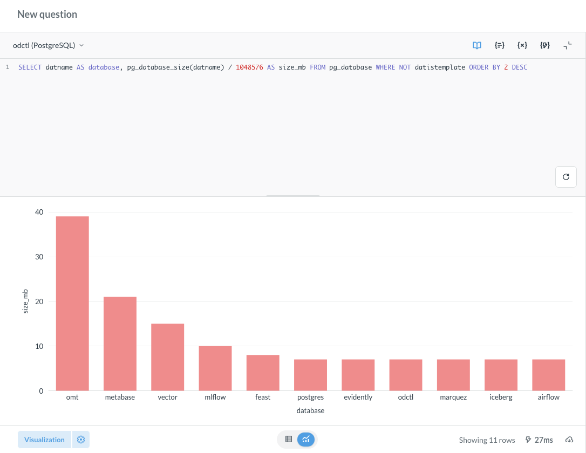

Trino and Metabase
The trino profile runs Trino, which queries PostgreSQL, Iceberg, ClickHouse, Kafka and Valkey through one SQL interface. The metabase profile runs Metabase, which draws charts and dashboards over those databases. Metabase keeps its own settings and dashboards in PostgreSQL, so both profiles start postgres. The commands below come from the end-to-end tests, with the names changed.
| Endpoint | Address |
|---|---|
| Trino UI and JDBC from the host | http://127.0.0.1:8080 |
| Metabase from the host | http://127.0.0.1:3000 |
Trino catalogs
| Catalog | Reads | Needs |
|---|---|---|
postgres |
the odctl database |
nothing more |
iceberg |
tables in the REST catalog, with files on SeaweedFS | catalog |
clickhouse |
the feature_store database on ch-11 |
ch-lite or ch-full |
kafka |
topics, with fields from the Karapace schema registry | kafka-lite or kafka-full |
valkey |
keys in Valkey | valkey |
Every catalog loads when Trino starts, even when its service is not running. A query against such a catalog fails until you start that profile. Catalogs finish loading after Trino's health endpoint starts answering, so SHOW CATALOGS can take a minute to list them all.
Run a query:
Trino has no password authentication, so it accepts any user name. docker exec -it trino trino connects as trino. Pass --user user to use the name the rest of the stack uses. Workspace explains the access rules in trino/rules.json.
The Trino UI at http://127.0.0.1:8080 asks only for a user name. It shows the cluster and the queries that ran in the last few minutes.

Metabase
Open http://127.0.0.1:3000 and create the first admin account. Then add each database under Admin settings, Databases, with these settings:
| Database type | Host | Port | Other settings |
|---|---|---|---|
| PostgreSQL | postgres |
5432 |
database odctl, user user, password password |
| ClickHouse | ch-11 |
8123 |
database default, user default, password password, no SSL |
| Starburst (for Trino) | trino |
8080 |
catalog postgres, schema public, user admin, no SSL |
Metabase runs inside the odctl network, so it reaches each database by container name. Use the Starburst driver for Trino, because it is the Trino driver Metabase ships. It needs a catalog, and any catalog in the table above works.
Metabase takes a while to start. It is ready when this request succeeds:
A SQL question on the PostgreSQL connection, shown as a bar chart:

From another container
Inside the odctl network, Trino is at http://trino:8080 and Metabase at http://metabase:3000.